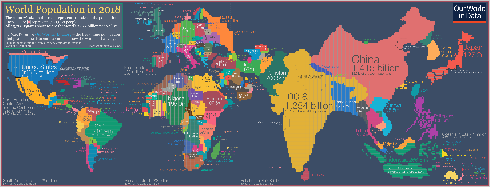

World Population Projection 2050
Martini Glass Visualtization - This analysis is based martini glass visualization taking into consideration to provide author selected questions, suggestion data to reader and then allow reader to drill down further in any direction based on its choice keeping structure in mind which will present an overview and allows the user to explore further from there.
The world population of 250 countries as a whole is taken as an example.
Below population cartogram: a geographical presentation of the world where the size of the countries are not drawn according to the distribution of land, but according to the distribution of people. The cartogram shows where in the world the global population was at home in 2018
**Below image is reference from world popuation growth website World Population Growth
Below bar chart:This visualisation shows again how the population growth rate has changed dramatically through time. It wasn't until 1803 that the world reached its first billion; it then took another 124 years to reach two billion. By the third billion, this period had reduced to 33 years, reduced further to 15 years to reach four. The period of fastest growth occurred through 1975 to 2011, taking only 12 years to increase by one billion for the 5th, 6th and 7th
**Below image is reference from world popuation growth website World Population Growth
This is the First interactive scene of this story. This is a Bar Chart which will show population growth projection in Billions in 2050 by 5 regions where event listner is used when mouse is hovered on each bar, it will draw horizontal dotted line and calculate the differences compared to the other regions and display it on the bars.
Drill down to get Top 6 Asian Cities Population growth Projection Asia Growth Projection 2050
World as a whole population projection 2050 on a line chart is provided here. Mouse pointer convert into "+" sign when navigate on to the chart area indicating to select a area.
Trigger - > Each time the brush selection changes, trigger the 'updateChart' function which update the chart and zoom into more details from years to months. This change is state in narrative visualtization are provided to user via select area and double click to reset the state.
***All data source are reference from website Our world in data